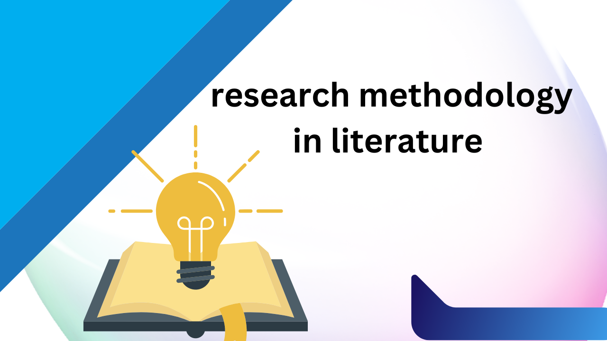

একাডেমিক গবেষণা পদ্ধতি ল্যাঙ্গুয়েজ এবং সাহিত্যে

একাডেমিক গবেষণা হল একটি বিস্তৃত গবেষণামূলক প্রক্রিয়া যা বিভিন্ন ধরনের তথ্য সংগ্রহ এবং বিশ্লেষণ করে। ল্যাঙ্গুয়েজ এবং সাহিত্য একটি গুরুত্বপূর্ণ বিষয় যা একটি বিস্তৃত এবং সংশ্লিষ্ট বিষয়। একটি ভাল গবেষণা প্রস্তুত করার জন্য, একটি গবেষণা প্রস্তুতকারীর প্রথমে একটি গবেষণা প্রস্তাব উদ্ভাবন করা উচিত। একটি গবেষণা প্রস্তাব অবশ্যই উপযোগী এবং প্রাসঙ্গিক হতে হবে। এরপর প্রয়োজনীয় তথ্য সংগ্রহ করা হয়। তথ্য সংগ্রহের জন্য প্রাথমিক এবং দ্বিতীয়স্তরের উৎস ব্যবহার করা হয়। প্রাথমিক উদাহরণ হতে পারে প্রকাশনা, সাংবাদিক রিপোর্ট, উইকিপিডিয়া এবং এনসাইক্লোপিডিয়া। দ্বিতীয়স্তরের উদাহরণ হতে পারে একাডেমিক পত্রিকা, বই, জার্নাল এবং ইলেকট্রনিক উৎস যেমন ওয়েবসাইট এবং ডেটাবেস।
তথ্য সংগ্রহের পর প্রয়োজনীয় বিশ্লেষণ এবং তথ্য প্রস্তুতি হয়। বিশ্লেষণের জন্য একটি গবেষণা প্রস্তাবে নির্ধারিত হতে হবে বিশেষ বিশ্লেষণ পদ্ধতি এবং বিশেষ উপকরণের ব্যবহার সম্পর্কে। তথ্য প্রস্তুতি সম্পর্কে, একটি গবেষণা প্রস্তাবে একটি প্রস্তাব তৈরি করে সেটি লেখা হয়। প্রস্তাবের অন্তর্ভুক্ত হতে পারে একটি বর্ণনা এবং একটি সংশ্লিষ্ট সমস্যা বা হাইপোথেসিস উল্লেখ করা হয়। পরবর্তীতে, গবেষণা প্রস্তাবের প্রস্তাবিত উপকরণ এবং পদক্ষেপের বিবরণ দেওয়া হয়।
গবেষণার পর প্রয়োজনীয় তথ্য সংক্রান্ত তথ্যগুলি একত্রিত এরপর, গবেষণার প্রয়োজনীয় তথ্য সংক্রান্ত তথ্যগুলি একত্রিত করে বিশ্লেষণ শুরু হয়। বিশ্লেষণের জন্য বিভিন্ন পদ্ধতি এবং উপকরণ ব্যবহার করা যেতে পারে, যেমন পরিসংখ্যান, উপাদেয় বিশ্লেষণ এবং উন্নয়নশীল তথ্য উপস্থাপনা।
এরপর, গবেষণার ফলাফল এবং মূল্যায়ন প্রদর্শিত হয়। ফলাফলের উপর ভিত্তি করে নতুন প্রশ্নগুলি তৈরি করা যেতে পারে এবং উপস্থাপিত উপায়গুলি উন্নয়নের জন্য সম্ভবততঃ পরিবর্তিত হতে পারে।
একাডেমিক গবেষণা শুরু করার আগে, গবেষণার প্রস্তাব তৈরি করা উচিত এবং পরিকল্পনা করা উচিত। এরপর তথ্য সংগ্রহ এবং বিশ্লেষণের প্রয়োজনীয় উপকরণ ব্যবহার করে একটি উপযুক্ত প্রস্তাব তৈরি করা যেতে পারে। গবেষণার ফলাফল গাথামুল বিশ্লেষণ এবং সাহিত্য গবেষণার জন্য একটি সম্পূর্ণ লেখার সাথে কীভাবে সম্পর্কিত গবেষণার বিভিন্ন খন্ড এবং উন্নয়নের জন্য প্রয়োজনীয় উপায়গুলি ব্যবহার করা উচিত।
প্রথমে গাথামুল বিশ্লেষণ সম্পর্কে জানা উচিত, যা বিভিন্ন পদ্ধতিতে করা যেতে পারে। এরপর উপাদেয় সংগ্রহের পদ্ধতি এবং বিভিন্ন উপাদেয় বিশ্লেষণের উপায়গুলি উল্লেখ করা উচিত। এছাড়াও, লেখার প্রথম অংশে পরিচিতি এবং উদ্দেশ্য পরিভাষা করা উচিত। এরপর উপাদেয়ের সম্পর্কে বিস্তারিত তথ্য দেওয়া উচিত, যেমন কোন গাথা উপাদেয় বিশ্লেষণের উপযোগী এবং কেন এটি গুরুত্বপূর্ণ।
এরপর গবেষণার পরিকল্পনা এবং পরিচালনা সম্পর্কে আলোচনা করা উচিত। এছাড়াও, লেখার এই অংশে উপাদেয় পর্যবেক্ষণের পদ্ধতি এবং গবেষণার বিভিন্ন পদ্ধতিসমূহ উল্লেখ করা উচিত।
লেখার পরবর্তী অংশে গবেষণার ফল এবং তার প্রভাব নির্ধারণ করা উচিত। এখানে প্রথমে প্রয়োজনীয় উপাদেয়ের নির্দিষ্ট গুণগত বৈশিষ্ট্যগুলি পর্যবেক্ষণ করা উচিত। এরপর গবেষণার পরিণাম এবং তার প্রভাব বিস্তারিতভাবে আলোচনা করা উচিত। সেই সাথে পরবর্তী অধ্যায়ে গবেষণার ফলাফল প্রকাশ করা উচিত।
লেখার শেষ অংশে নিবন্ধনপত্র, উদ্ধৃতি এবং তথ্যসূত্র প্রদান করা উচিত। এছাড়াও, গবেষণা করার জন্য ব্যবহৃত সকল উপকরণের তথ্য দেওয়া উচিত।
লেখার শেষে সারসংক্ষেপ, পরবর্তী গবেষণার সাজেশন এবং পরবর্তী পরিকল্পনার বিষয়টি পর্যালোচনা করা উচিত। সারসংক্ষেপে লেখার মূল বিষয়টি সংক্ষেপে উল্লেখ করা উচিত। এছাড়াও, পরবর্তী গবেষণার জন্য কোন পরিবর্তন সুপারিশ করা হয়ে থাকলে সেটি উল্লেখ করা উচিত।
একটি ভাল লেখা প্রস্তুত করার জন্য সর্বদা একটি পরীক্ষা পেতে হয়। তাই, লেখার পর লেখা পরিদর্শন করে ত্রুটি বের করা উচিত। আরও ভাল হতে লেখার জন্য সেই ক্ষেত্রে নিজের কর্মক্ষমতা এবং লেখার স্বভাব সম্পর্কে পরিষ্কার ধারণা রাখা উচিত।
সমস্তকিছু বিবেচনার পর, একটি ভাল লেখা প্রস্তুত করতে সময় ও শ্রম প্রয়োজন। সম্পূর্ণ লেখাটি যদি অকার্যকর হয় তবে এর মূল উদ্দেশ্যটি অধম হবে।
সামগ্রিকভাবে বলতে গেলে, সমাজবিজ্ঞান এবং বাংলা সাহিত্য পরস্পর প্রতিফলিত। বাংলা সাহিত্য বিষয়টি আমাদের সমাজের ইতিহাস, সংস্কৃতি, রাজনীতি এবং বিভিন্ন সামাজিক পরিবর্তন সম্পর্কে আমাদের জ্ঞান প্রদান করে।
একটি বিশেষ বিষয় নিয়ে গবেষণা করার জন্য সামগ্রিকভাবে আমাদের প্রথমেই সম্পূর্ণ বিষয়টি সম্পর্কে জ্ঞান সংগ্রহ করতে হবে। পরে তার উপর ক্ষুব্ধ হওয়া উচিত এবং যেসব প্রশ্ন আমাদের থাকতে পারে সেগুলি নিষ্ক্রিয় করতে হবে। এই প্রশ্নগুলি আমাদের গবেষণা এবং লেখার বিষয়টি চিহ্নিত করবে।
গবেষণা করার সময়, আমাদের প্রথমেই গবেষণার উদ্দেশ্য নির্ধারণ করতে হবে। এরপর সংগ্রহকৃত তথ্যের উপর ভিত্তি করে আমরা আমাদের হাইপোথেসিস পরীক্ষা করতে পারি।
গবেষণার জন্য আমাদের সম্ভবত কয়েকটি পদক্ষেপ নেয়া হবে। প্রথমে, আমরা উপস্থিত গবেষণা করব যেখানে আমরা আমাদের উদ্দেশ্য পুরণ করতে পারব। একটি গবেষণা স্থানের পরিচিতি এবং এর বিভিন্ন সুযোগ ও সীমার সম্পর্কে সাবধান হতে হবে। তারপরে, আমরা গবেষণার পরিকল্পনা তৈরি করব যেটি আমরা অনুসরণ করব। পরিকল্পনাটি আমাদের উদ্দেশ্য, সম্ভাব্য সমস্যা এবং উপস্থিত সংস্থার সাথে সম্পর্কিত হওয়া উচিত।
তারপরে আমরা একটি সম্পূর্ণ গবেষণা পরিকল্পনা তৈরি করব যা আমাদের গবেষণার পরিকল্পনা, উদ্দেশ্য, প্রশ্ন, হাইপোথেসিস, সংগ্রহকৃত তথ্য এবং তার উপর ভিত্তি করে পরিচালিত হবে। একটি ভাল গবেষণা পরিকল্পনা একটি ভাল গবেষণার প্রবেশদ্বার।
মরা আমাদের গবেষণার জন্য সংগ্রহকৃত তথ্যগুলি পরীক্ষা করব এবং তাদের মান ও বৈশিষ্ট্য বিবেচনায় নেওয়া হবে। তারপরে আমরা তাদের ভিত্তিতে আমাদের গবেষণার হাইপোথেসিস এবং প্রশ্নগুলি পরিকল্পনা করব। এরপর আমরা গবেষণার পরিমাপ পরিকল্পনা করব এবং একটি ডাটা কালেকশন পরিকল্পনা তৈরি করব যা আমাদের হাইপোথেসিস এবং প্রশ্নগুলি পরীক্ষা করতে সহায়তা করবে।
তারপরে আমরা আমাদের সংগৃহীত ডাটার উপর ভিত্তি করে একটি প্রাসঙ্গিক পরিসংখ্যান পরিচালনা করব। এরপর আমরা ডাটা বিশ্লেষণ করব এবং আমাদের হাইপোথেসিস ও প্রশ্নগুলি পরীক্ষা করব। আমরা আমাদের পরিশ্রমটির ফলস্বরূপ প্রতিবেদন তৈরি করব যেটি আমাদের গবেষণার উদ্দেশ্যগুলি পুরণ করবে।
একটি গুরুত্বপূর্ণ বিষয় হল সমস্যাগুলি বুঝতে এবং তাদের সমাধান খুঁজতে আমাদের মধ্যে শক্তি এবং জ্ঞান থাকতে হবে। আমাদের গবেষণার মাধ্যমে সমস্যাগুলি আরও সহজে বোঝা এবং তাদের সমাধান উদ্বোধন করা যেতে পারে। এছাড়াও, আমরা সমস্যাগুলি সমাধান করতে সময় এবং পরিশ্রম নিয়ে কাজ করতে হবে। একটি গুরুত্বপূর্ণ বিষয় হল সমস্যার মূল কারণ বুঝতে এবং সমাধান খুঁজতে সমস্ত সম্ভব উপায় ব্যবহার করা।
এছাড়াও, আমাদের গবেষণার মাধ্যমে সমস্যার মূল কারণ এবং সমাধান সম্পর্কে জ্ঞান সংগ্রহ করতে হবে। তারপরে আমাদের হাইপোথেসিস এবং প্রশ্নগুলি পরীক্ষা করা যেতে পারে এবং আমাদের গবেষণার ফলাফল নির্ভর করে সমস্যার সমাধানে সাহায্য করতে পারে।
একটি ভাল গবেষণা করার জন্য আমাদের প্রথমে একটি গবেষণা প্রস্তাব লিখতে হবে। প্রস্তাবটি সমস্যাটি এবং এর উপস্থিত সমস্যাগুলি বর্ণনা করবে। পরে আমাদের পরিচিত সমস্যাগুলির সাথে সম্পর্কিত সামগ্রী সংগ্রহ করা হবে। সংগ্রহকৃত সামগ্রীগুলি আমাদের পরীক্ষার সাথে তুলনা করা হবে এবং প্রস্তাবটি উন্নয়ন করা হবে।
আমরা বিভিন্ন ধরনের গবেষণার পদক্ষেপ নেওয়া পারি, যেমন প্রাথমিক গবেষণা, দ্বিতীয় হাতের গবেষণা, উন্নয়নশীল গবেষণা ইত্যাদি। প্রাথমিক গবেষণা বেশিরভাগ ক্ষেত্রে তথ্য সংগ্রহে বিশেষ গুরুত্ব দেওয়া হয়। দ্বিতীয় হাতের গবেষণা আমাদের পূর্ববর্তী গবেষণার ফলাফল ব্যবহার করে সমস্যাগুলি সমাধান করতে পারে। উন্নয়নশীল গবেষণার ক্ষেত্রে, প্রায় সমস্ত উন্নয়ন হয়। আমরা একটি উন্নয়নশীল গবেষণার প্রস্তাব লিখতে পারি যেখানে আমরা প্রাথমিক গবেষণার ফলাফল ব্যবহার করে নতুন সমস্যাগুলি সমাধান করব।
একটি উন্নয়নশীল গবেষণার প্রস্তাব লিখার জন্য আমাদের নিম্নলিখিত পদক্ষেপগুলি অনুসরণ করতে হবে:
সমস্যার বিষয় নির্ধারণ করা। একটি উন্নয়নশীল গবেষণার সমস্যার বিষয় অবশ্যই উন্নয়নশীল হতে হবে। সমস্যাটি পর্যালোচনার পর আমরা নির্দিষ্ট হলে একটি বর্ণনা লিখতে পারি এবং এটি যে বিষয়ে বিশেষ গুরুত্ব রয়েছে তা নির্দিষ্ট করতে হবে।
সমস্যাগুলির উৎপত্তি নির্ধারণ করা। সমস্যাগুলির উৎপত্তি বোঝা খুবই গুরুত্বপূর্ণ যাতে আমরা সমস্যাগুলি সমাধান করতে পারি। এখানে আমরা আমাদের পূর্ববর্তী গবেষণার প্রাথমিক ফলাফল ব্যবহার করতে পারি যাতে আমরা সমস্যাটি সমাধান করতে পারি।
উদ্দেশ্য নির্ধারণ করা। এখানে আমরা উদ্দেশ্য নির্ধারণ করব যে আমরা এই গবেষণাটি কেন করছি এবং এর মাধ্যমে কী লাভ পাওয়া হতে পারে।
পর্যবেক্ষণ পরিকল্পনা করা। এখানে আমরা পর্যবেক্ষণ করব যে কি ধরণের উপাদানগুলি এই গবেষণার পর্যবেক্ষণের জন্য ব্যবহৃত হবে এবং তার পরিমাণ কত হবে।
ডেটা সংগ্রহ এবং প্রয়োগ করা। ডেটা সংগ্রহ এবং প্রয়োগ করার জন্য আমরা নির্দিষ্ট প্রয়োজনীয়তা ও উপযুক্ত উপায়গুলি নির্বাচন করব।
পর্যবেক্ষণের ফলাফল প্রদর্শন করা। পর্যবেক্ষণের ফলাফল বিশ্লেষণ করা এবং উদ্ধার করা যাতে আমরা সমস্যাগুলি সমাধান করতে পারি।
7. সমাধান প্রস্তাব করা। আমরা গবেষণার ফলাফল অনুসারে সমস্যাগুলির জন্য সমাধান প্রস্তাব করব। সমাধান প্রস্তাবগুলি একটি বিশেষ পরিকল্পনা দ্বারা পরীক্ষা করা যেতে পারে।
8. সমাধানের পরীক্ষা করা। আমরা প্রস্তাবিত সমাধানগুলি পরীক্ষা করব এবং তার প্রভাব নিরূপণ করব যাতে আমরা সমস্যাগুলি সমাধান করতে পারি।
9. ফলাফল বিশ্লেষণ এবং বিবেচনা করা। পরীক্ষা প্রস্তাবগুলি সাফল্যের হাতে আসলে আমরা তাদের ফলাফল বিশ্লেষণ এবং বিবেচনা করব যাতে আমরা পরবর্তী গবেষণার জন্য উন্নয়নের পথ চিহ্নিত করতে পারি।
10. উপসংহার এবং পরবর্তী পরিকল্পনা করা। সমস্যাগুলির সমাধানের পর আমরা গবেষণার ফলাফল উপসংহার করব এবং পরবর্তী গবেষণার জন্য পরিকল্পনা করব।
এই সমস্ত পদক্ষেপগুলি আমাদের গবেষণার সম্পূর্ণ প্রক্রিয়াকে একটি সম্পূর্ণ পরিচালিত ও প্রভাবশালী পদক্ষেপ হিসাবে উল্লেখ করে। গবেষণার সমস্ত উদ্দেশ্য এবং প্রস্তুতির পর আমরা সমস্যাগুলি সমাধান করতে সক্ষম হব এবং সেই সমাধানগুলি উন্নয়নের পথ চিহ্নিত করব। এই পদক্ষেপগুলি আমাদের সকল গবেষণার সফলতার জন্য গুরুত্বপূর্ণ।